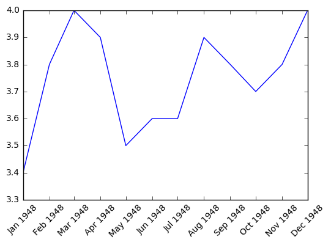

matplot的使用之一:折线图、子图
Page content
import pandas as pd
unrate = pd.read_csv('UNRATE.csv')
unrate['DATE'] = pd.to_datetime(unrate['DATE'])
print(unrate.head(12))
DATE VALUE 0 1948-01-01 3.4 1 1948-02-01 3.8 2 1948-03-01 4.0 3 1948-04-01 3.9 4 1948-05-01 3.5 5 1948-06-01 3.6 6 1948-07-01 3.6 7 1948-08-01 3.9 8 1948-09-01 3.8 9 1948-10-01 3.7 10 1948-11-01 3.8 11 1948-12-01 4.0
import matplotlib.pyplot as plt
#Using the different pyplot functions, we can create, customize, and display a plot. For example, we can use 2 functions to :
plt.plot() # 画图操作
plt.show() # 显示
first_twelve = unrate[0:12]
plt.plot(first_twelve['DATE'], first_twelve['VALUE'])
plt.show()
#While the y-axis looks fine, the x-axis tick labels are too close together and are unreadable
#We can rotate the x-axis tick labels by 90 degrees so they don't overlap
#We can specify degrees of rotation using a float or integer value.
first_twelve = unrate[0:12]
plt.plot(first_twelve['DATE'], first_twelve['VALUE'])
#print help(plt.xticks)
plt.xticks(rotation=45)
plt.show()

#xlabel(): accepts a string value, which gets set as the x-axis label.
#ylabel(): accepts a string value, which is set as the y-axis label.
#title(): accepts a string value, which is set as the plot title.
first_twelve = unrate[0:12]
plt.plot(first_twelve['DATE'], first_twelve['VALUE'])
plt.xticks(rotation=45)
plt.xlabel('Month')
plt.ylabel('Unemployment Rate')
plt.title('Monthly Unemployment Trends, 1948')
plt.show()
fig = plt.figure()
ax1 = fig.add_subplot(2,2,1)
ax2 = fig.add_subplot(2,2,2)
ax4 = fig.add_subplot(2,2,4)
plt.show()
import numpy as np
fig = plt.figure(figsize=(6,5)) #画图区域的大小
ax1 = fig.add_subplot(2,1,1)
ax2 = fig.add_subplot(2,1,2)
ax1.plot(np.random.randint(1,5,5), np.arange(5))
ax2.plot(np.arange(10)*3, np.arange(10))
plt.show()
unrate['MONTH'] = unrate['DATE'].dt.month
fig = plt.figure(figsize=(6,3))
plt.plot(unrate[0:12]['MONTH'],unrate[0:12]['VALUE'], c='red')
plt.plot(unrate[12:24]['MONTH'],unrate[12:24]['VALUE'], c='blue')
plt.show()
fig = plt.figure(figsize=(10,6))
colors = ['red', 'blue', 'green', 'orange', 'black']
for i in range(5):
start_index = i*12
end_index = ((i+1))*12
sub_set = unrate[start_index:end_index]
plt.plot(sub_set['MONTH'], sub_set['VALUE'], c=colors[i])
plt.show()
fig = plt.figure(figsize=(10,6))
colors = ['red', 'blue', 'green', 'orange', 'black']
for i in range(5):
start_index = i*12
end_index = ((i+1))*12
sub_set = unrate[start_index:end_index]
label = str(1948+i)
plt.plot(sub_set['MONTH'], sub_set['VALUE'], c=colors[i], label=label)
plt.legend(loc='upper left')
#print(help(plt.legend))
plt.show()
# 一个完整的折线图就画好了
fig = plt.figure(figsize=(10,6))
colors = ['red', 'blue', 'green', 'orange', 'black']
for i in range(5):
start_index = i*12
end_index = ((i+1))*12
sub_set = unrate[start_index:end_index]
label = str(1948+i)
plt.plot(sub_set['MONTH'], sub_set['VALUE'], c=colors[i], label=label)
plt.legend(loc='upper left')
#print(help(plt.legend))
plt.xlabel('Month, Integer')
plt.ylabel('Unemployment Rate, Percent')
plt.title('Monthly Unemployment Trends, 1948-1952')
plt.show()